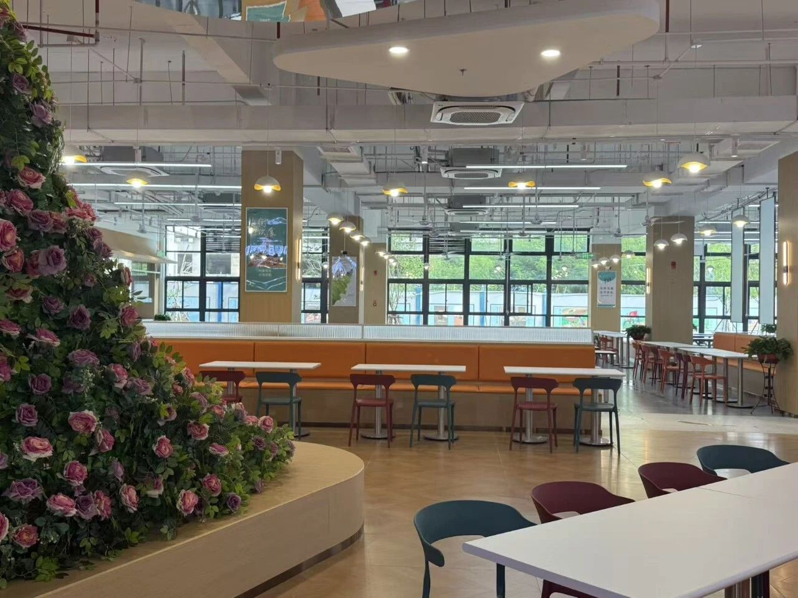
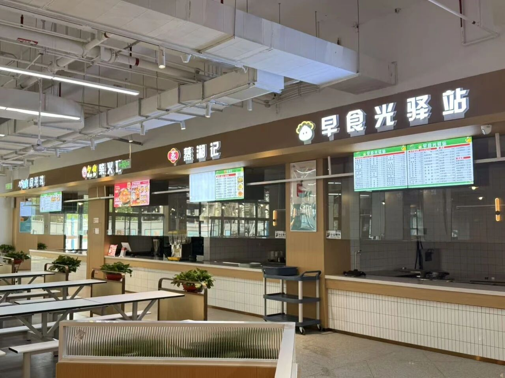

厦门华厦学院宿舍主要分 四人间 和 六人间 两种，具体哪个院系分哪里每年不同。以下为学长学姐真实拍摄：

▲ 四人间 · 上床下桌 · 空间宽敞明亮

▲ 宿舍全景 · 空调全覆盖 · 独立书桌
| 项目 | 四人间 | 六人间 |
|---|---|---|
| 床型 | 上床下桌 ✅ | 上下铺 |
| 空调 | 有 ✅ | 有 ✅ |
| 独卫 | 部分有 | 楼层公用 |
| 热水 | 刷卡取热水 | 刷卡取热水 |
| 洗衣机 | 每层2台 | 每层2台 |
| 电费 | 每月送20度，超额自付 | 每月送20度，超额自付 |
| WiFi | 校园网限速2Mbps（很慢！） | |
学校校园网虽然免费，但限速只有 2Mbps（每秒下载约250KB），看视频卡、打游戏掉线、刷网课缓冲半天。很多学长学姐都自己搞了大流量的手机卡当热点用。
• 插线板（至少3孔，宿舍插座不够用）
• 小台灯（晚上熄灯后刚需）
• 耳塞+眼罩（室友作息不同）
• 一张好用的流量卡（校园网真的太慢了）
• 床帘（创造自己的小空间）
• 除湿袋/樟脑丸（南方必备）